|
Instalación del driver para el conversor USB-RS232 |
El propósito de este documento es proporcionar un método sencillo para instalar los drivers del convesor USB-RS232 en los sistemas Windows. Este tipo de driver creará un puerto COM virtual (VCP) que emula un puerto COM standard. Así se podrá usar de la misma manera que cualquier otro puerto COM del PC.
Fácil de instalar.
Se usa como si fuese un COM standard del PC.
Rapidez en el desarrollo de aplicaciones.
Este documento se distribuyen bajo licencia FDL por lo que se permite su copia, modificación y distribución, siempre y cuando se mantenga esta nota.
Si se ha instalado un dispositivo del mismo tipo antes y la versión de los drivers instalados es diferente de la que se desea instalar, es necesario desinstalarlos antes de continuar. Por favor lea el apartado Desinstalar que detalla el proceso de desinstalación del driver.
Obtener la última versión de los drivers de la página del fabricante.
Conectar el conversor USB-RS232 a un puerto USB libre en el PC. Esto lanzará el asistente de windows "Asistente para hardware nuevo encontrado". Haga click en el botón "Siguiente" para para continuar.
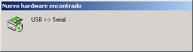
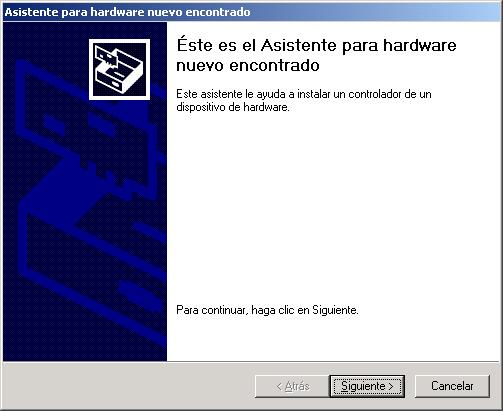
Seleccione "Buscar un controlador apropiado para mi dispositivo (recomendado)", como se muestra en la siguiente imagen y pulse en "Siguiente".
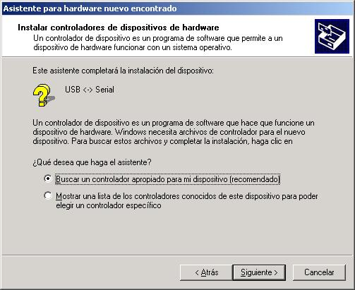
Marque la opción "Especificar un ubicación", desmarca las demás opciones y pulsa en "Siguiente".
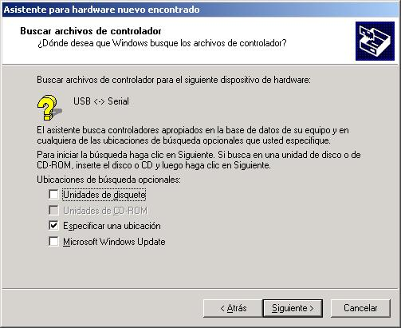
Introduzca la ruta o en su defecto pulse sobre el botón "Examinar".
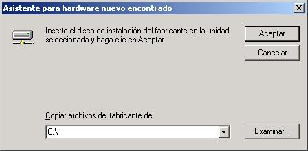
Aparecerá la siguiente pantalla donde podrá seleccionar le direcctorio donde tiene guardado el driver. El sistema seleccionará de forma automática el fichero necesario, en este caso será FTDIBUS.INF, haga click sobre "Abrir" y luego sobre "Aceptar" para continuar.
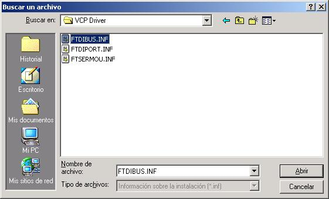
Windows mostrará una pantalla similara a la siguiente donde indicará que ha encontrado un driver apropiado, pulse sobre "Siguiente" y en la siguiente pantalla "Finalizar" para terminar.
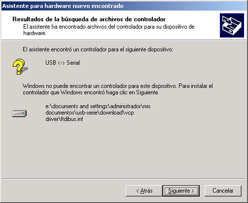
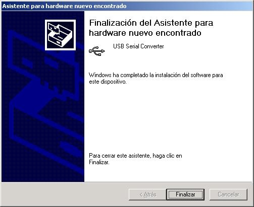
Una vez que pulsemos sobre "Finalizar" el asistente continuará instalando el driver pero en esta ocasión requerirá el fichero FTDIPORT.INF, que se seleccionará de forma automática.
Cuando termine el asistente de instalar todos los ficheros necesarios podremos comprobar que tendremos un nuevo puerto en el sistema, para ello abriremos el "Administrador de dispositivos" y en el apartado de "Puertos (COM & LPT)" veremos el nuevo puerto que ha creado el driver.
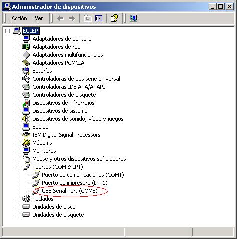
Desconectar el conversor del PC.
Abrir la utilidad "Agregar o quitar progrmas" seleccionar "FTDI USB Serial Converter Drivers" de la lista de programas
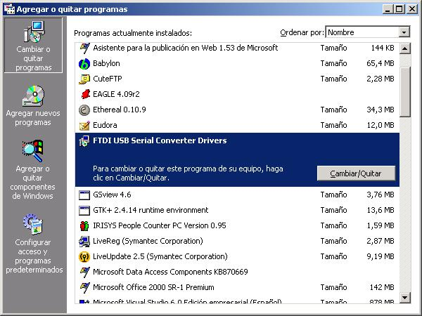
Pulse sobre el botón "Cambiar/Quitar". Esto ejecutará el programa desinstalador, haga click sobre "Continue" para terminar.
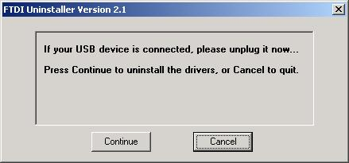
Cuando el desinstalador termine, mostrará una pantalla parecida a la siguiente pulse sobre "Finish" para terminar.
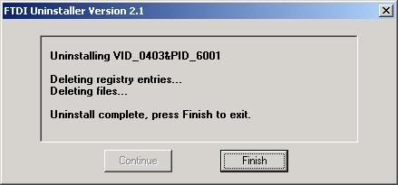
Future Technology Devices International Ltd.: Página del fabricante del integrado FT232BM
19/Abril/2005: Publicado en la web